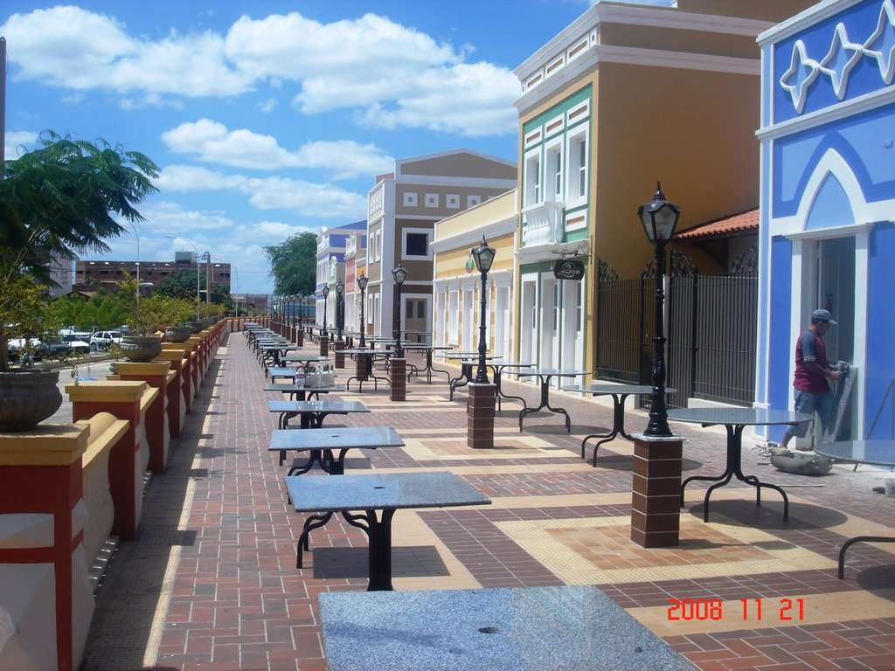

O Centro de Mossoró é o coração histórico, cultural e econômico da cidade. Sua trajetória é marcada por pioneirismo, riqueza econômica e episódios de bravura que moldaram a identidade do povo potiguar.
Iniciou-se em 1772 com a construção da capela de Santa Luzia (hoje Catedral). O povoamento cresceu ao redor do templo, impulsionado pelas fazendas e salinas.
No século XIX e XX, a exportação de sal e algodão trouxe riqueza. Em 1915, a Estação Ferroviária consolidou o Centro como um fervilhante polo comercial.
Palco da Abolição da escravidão em 1883, da histórica resistência ao bando de Lampião em 1927 e do primeiro voto feminino da América Latina.
Hoje, abriga o Teatro Dix-Huit Rosado, a Estação das Artes, o Memorial da Resistência e o Museu Lauro da Escóssia, preservando viva a memória local.

A Origem: Fé e Fazendas (Século XVIII) O povoamento da região começou no século XVIII, impulsionado pelas fazendas de gado e pela exploração do sal. O marco inicial do Centro foi a construção de uma igrejinha de taipa em 1772, erguida pelo fazendeiro Antônio de Souza Machado em homenagem a Santa Luzia. Ao redor dessa capela (onde hoje fica a imponente Catedral de Santa Luzia), as primeiras residências e comércios começaram a surgir, estabelecendo o traçado inicial do Centro.
Av. Rio Branco - Centro, Mossoró - RN, 59621-400
vale a pena ser visitada por unir o passado ferroviário de Mossoró, ao seu papel atual como o coração cultural da cidade.
Rua Trinta de Setembro, 514.
O Museu Lauro da Escóssia vale a visita por reunir marcos do pioneirismo de Mossoró. Em um prédio histórico gratuito, você conhece de perto o primeiro voto feminino da América Latina, a abolição precoce da escravidão e a histórica resistência da cidade ao bando de Lampião.
Av. Rio Branco - Centro, Mossoró - RN, 59621-400
a Praça da Convivência. Este espaço, que fica no Corredor Cultural, é um dos principais complexos de lazer, gastronomia e cultura de Mossoró, no Rio Grande do Norte.